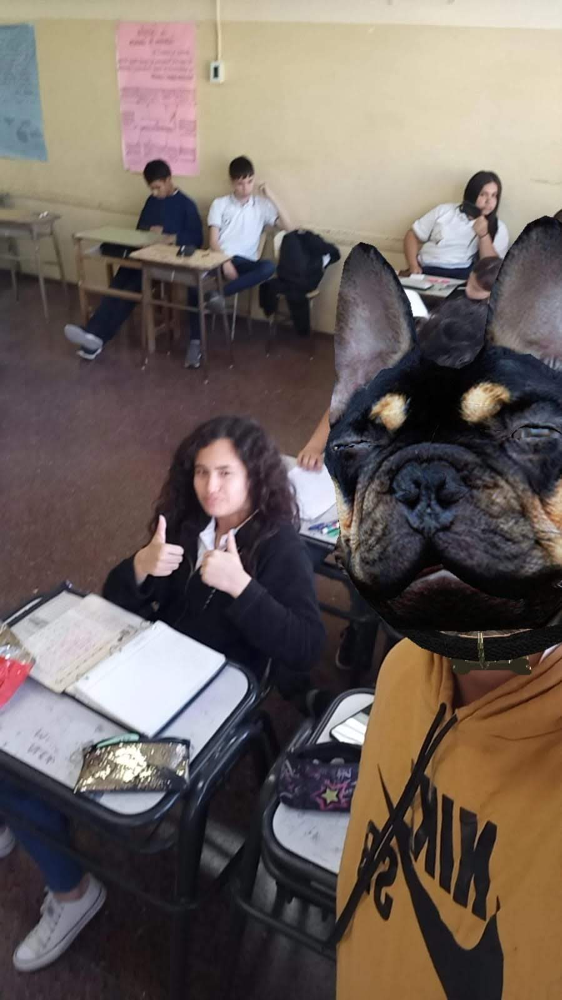
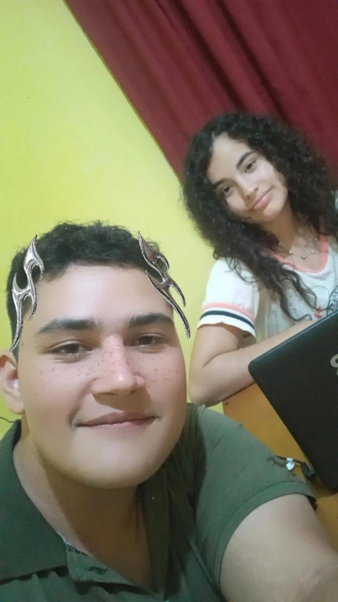
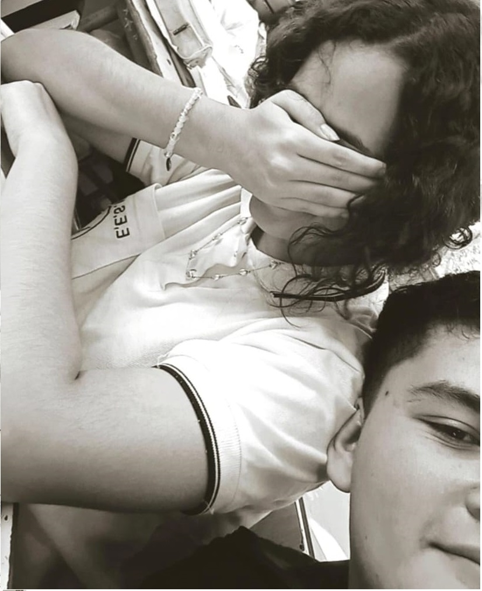
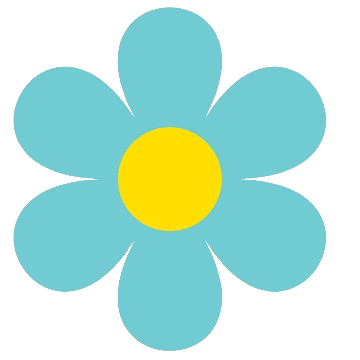
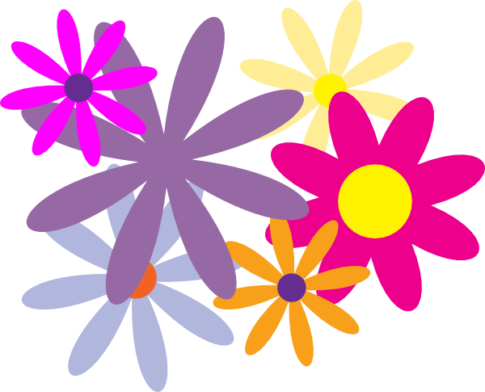

El Museo de Nuestra Amistad
Encontrar un amigo fiel
es como dar con un tesoro
o como hallar un refugio seguro.
Un amigo fiel no tiene precio:
su valor no se mide con dinero.
Un amigo así nos salvará la vida.
Si obedecemos a Dios,
hallaremos ese amigo,
y sabremos reconocerlo
porque él también obedece a Dios.
Eclesiástico 6:14-17
haciendonos los lindos en el cumpleaños de lautaro, te hacia trampa en el juego de quien aguanta mas tiempo debajo del agua

vos retandome como de costumbre para que yo haga la tarea y yo sacandome fotos con filtros de perro jajaa
aca despues de recibir un pelotazo y despues de casi ahogarme en la pile pq me queria hacer el capo tirandome de clavado

aca en el depa de ana a punto de comer pizza, ver una peli triste y luego salir a que Dios nos ministre juntos, uno de mis mejores recuerdos con vos

esta es de este año, nuestro ultimo año de clases, en el mismo salon, como siempre vos tratando de hacer tarea y yo molestando ajaj
gracias por ser esa amiga que podria llamar hermana y no solo en cristo, sino que tambien del corazon.
Desde el primer momento en que te conocí, supe que serías una persona especial en mi vida. Tu risa contagiosa, tu bondad infinita y tu pasión han llenado mis días de alegría y color. Eres una amiga increíble, alguien con quien siempre puedo contar y con quien comparto momentos increíbles. Esta notita está dedicada a ti (solamente a ti, no la subas a WhatsApp que me da vergüenza), a nuestras risas y recuerdos. En nuestra galería, he puesto algunas de mis fotos favoritas y he dejado notitas debajo de cada una, con el fin de que no solo queden guardadas en mi corazón sino también en el tuyo. Gracias por ser esa amiga que siempre está ahí y, como te dije estos días, esa persona con quien puedo ser simplemente yo. Te he mostrado (y sigo mostrando) partes de mí que nadie conoce, y espero que tú puedas hacer lo mismo conmigo. Espero que te guste este regalito tanto como a mí me gustó crearlo para ti. Quiero agradecerte especialmente por impulsarme a ser mejor en los estudios y en la vida. Tu apoyo constante y tus palabras de aliento me motivan a alcanzar mis metas y a seguir creciendo cada día. Gracias por creer en mí, incluso cuando yo dudaba de mí mismo. Dios sabe lo agradecido y alegre que estoy de tenerte en mi vida.

